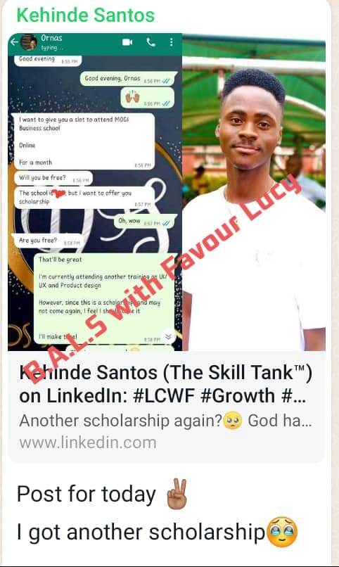
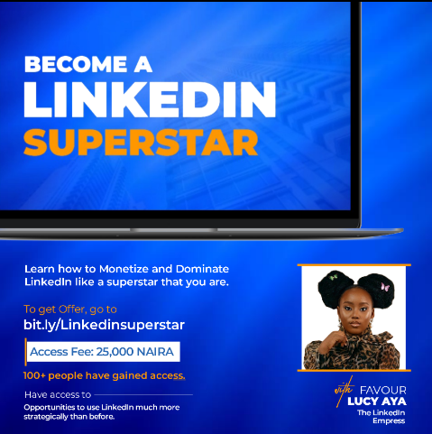

My name is Favour Lucy Aya (The LinkedIn Empress)
A copywriter and also a Linkedin coach and influencer with over 56,000 passionate followers I got in just 12 months.
Don't get carried away or intimidated, because
…less than 2 years ago I was just an average young girl of 17, with no steady source of income, no fame, no visibility or influence online.
Not just that, I was naive when it comes to social media marketing, and what it was to monetize a skill online.
I was just looking for a way to sustain myself in school with the little money I was making from writing long–form articles for my former boss who greedily underpaid me.
He subjected me to writing over 15,000 word articles daily just to pay me peanuts at the end of the month.
And the most painful part was that he doesn't pay me duely, I always had to beg him to pay me before he'd release my money.
It was very frustrating and overwhelming to me..
..but I had to keep working for him because I needed to ease some of the financial burden off my mum who worked tirelessly to fend for me and the rest of the family.
This, and even more hard times went on for a while with me.
But I didn't want that kind of life for myself
I was tired of using my skills to work for peanuts, when I could find the high paying clients myself.
I was tired of being over used and not getting paid what I deserve.
I was tired of being limited from using my skills to explore other opportunities out there.
I was tired of going dead broke, and begging people for money when I actually have a skill that can earn me a lot of money online.
All these, and more got me so choked up
And that was when I swore to learn how to make money with my skill online by myself without having to work for my boss or anyone again.
This decision made me to rule off my contract with my boss
In the months that followed it, I
● Struggled to figure things out, almost got frustrated when things weren't working out
● I buried myself in hours of research–watching YouTube videos and every free material I could find online on how to monetize my skill online.
Spent my feeding money on dozens of webinars, hacks, and 'how to monetize your skill online' classes.
…in the process of doing all these things
I finally stumbled upon this very blueprint that I'm about to hand over to you now…
A simple, yet, effective strategy that gave me
$500 in three (3) weeks of showing up with my skill on the online space.
Over 57,000 passionate followers in a space of 12 months—which makes me the youngest and 2nd most followed Nigerian student on Linkedin currently
Over 60,000 weekly appearances across multiple search engines—which makes me overly visible to potential clients.
Tony Elumelu's mentorship, which makes me the youngest TOE mentee currently
Okay, I've got to stop listing what this blueprint has offered me in less than 12 months because they're endless..
…subsequently, I decided to impact on people with this same blueprint to see if it can be replicated
See what I got
My students took this simple, yet, effective hack and built something really amazing for themselves
I was able to dominate a huge part of LinkedIn (the monetization aspect) and I took intentional individuals who have skills, and the hunger to land high paying jobs, and showed them how to bag deals and gain visibility online.
Look at Kehinde, he's a graphic designer and a good student of mineüëáüëá
Did I also tell you that this blueprint will not only help you to land high paying gigs, but will also give you overwhelming visibility and followers very rapidly
See for yourself
Grace and Funmi are some of my new students who are doing so well with this LinkedIn blueprint I'm about to give to you to leverage.
But this is not about me, or my students…
This is all about you
This is about how you too can take this simple, yet effective blueprint I'm about to hand over to you and begin to build something very sustainable for yourself.
…in a minute I'll hand over the blueprint to you so that you can begin leveraging it immediately
But first, let me explain how this whole thing I've been talking to you about works.
This simple, yet, effective blueprint is called Dominate and Monetize LinkedIn Like a Superstar
I know you might be asking what is 'LinkedIn '??
Well,
But it's is much more than just a professional networking platform
My students and I refer to LinkedIn as 'Goldmine'
It is Goldmine because it exposes you to unmerited opportunities—opportunities that your CV or educational qualifications can not give to you on a normal sense.
My students an I have closed numerous 6figures deals and more on Linkedin without a CV
….did I also tell you that I just turned 18 in June 2022, and currently in my 200L studying law
But LinkedIn changed everything for me in a space of 12 months
…Currently I am 2nd most followed Nigerian student on Linkedin and the youngest Tony Elumelu's mentee
That is how much I have dominated the LinkedIn space
My skill helped me, and I was able to hack how to monetize it very effectively alongside building a passionate audience on Linkedin
Not everyone has been able to figure that out, and that is exactly what I want to show you now..
…with your skill (whatever skill it is) what I am about to hand over to you will give you untold fame, finance, and great opportunities.
It is working for me and 100s of great individuals who took this blueprint from me.
LinkedIn is a Goldmine, even thought leaders outside my circle attests to that
Apart from landing high paying clients who are ever ready to pay you well from your services,
LinkedIn is also a great place to get your dream job.
But there's a problem
In as much as Linkedin is stuffed with overwhelming visibility and opportunities for job seekers, professionals, and skilled individuals
….a lot of these individuals have wonderful skills they can monetize on Linkedin
Some of them have notable audience that can either buy or recommend them to others.
But they don't know how to actually leverage Linkedin, in terms of landing high paying clients or even securing their dream jobs.
…It is very easy to do, but you need to know exactly how to go about it to make it easy
The secret behind that is what I'm about to hand over to you right now.
This secret has worked for me, it is working for 100s of my students around the world
….and I GUARANTEE you that it'll work magic for you too
So here's the thing
If you want to earn hundreds of thousands of dollars with your skills
Land high paying clients who are willing to pay you well
Or maybe there's a dream job you've been longing to get but all hope seems lost
You want to gain visibility online so that opportunities can come knocking at your door
Great opportunities that'll give you quality connections and sustainable income
Or maybe
….just maybe, you want to advance your career and skills in a more profitable way, so you wouldn't have to keep running low on finances and end up facing overwhelming bills all the time.
Then I can help you achieve all that
…In such a way that you wouldn't have to remain broke with your skills
Or struggle to grow your business online
Or search for low income jobs endlessly
Or work 9-5 without anything visible to show for it.
All these wannabe–challenges, and more are what this simple, yet, effective blueprint I called
Dominate and Monetize LinkedIn Like a Superstar
...can solve
Inside this blueprint…
You will not only learn exactly how to land high paying clients on a regular basis for your business
You will also be exposed to untold opportunities, online visibility, and magnetic tactics and strategies that will help you to earn hundreds of dollars and still build large and passionate audience on Linkedin
Now, there's a warning to this!
Do not read further or get this blueprint if you will NOT…
Go through the blueprint when you get it
Implement everything I will show you inside the blueprint.
why?
Because no matter how simple the system is…
You won't get any result if you do not implement…
And I don't want that
I would rather give this blueprint to people who are ready to implement the simple steps I'll show them…
So, I'd advise you close this page NOW if you are not ready…
But if that's NOT your case..
….I mean, if you are already tired of having financial problems, and struggling to grow your business online.
And you won't even hesitate to do everything I say, as long as it brings you massive results in a short amount of time...
Then here is what you'll get inside the Blueprint.
In Module 1 you will be introduced to LinkedIn properly..
How to navigate it, and position yourself properly to attract overwhelming opportunities and visibility
…you will learn how to set up your Linkedin profile, and optimize it to look very professional and attractive.
This will help you to rank high on search results, which makes it very possible and too easy for potential clients to find you.
A lot of businesses and high skilled professionals do not know how to set up and optimize their LinkedIn profile, as wall as positioning themselves well so that potential clients can find them
..yet they wonder why they're getting little to nothing on Linkedin.
They tend to block their opportunities by themselves on Linkedin
This won’t be your case…
Because you are going to see how to perfectly set up and optimize your LinkedIn profile the right way.
this is worth #100,000 And that’s not all…
In Module 2 you will learn Strategic Content Creation.
…how to put out quality content that will resonate with your audience and make them glued to you.
This will avail you to high paying clients, job opportunities, high visibility, and massive followers on Linkedin.
This module will teach you how to imprint your brand and personality in the minds of your audience and turn them into your loyal advocates, this is worth #70,000.
Looking at Module 3,,,
You will be exposed to Inbound Marketing.
This teaches you how to sell yourself on Linkedin without appearing salesy or desperate.
You will learn how to use effective strategies in your content to attract high paying clients to your DM
….like they'll literally cue in on your DM asking for your services.
Really??
Yes, this module teaches you exactly how to be magnetic to clients..
…they'll be the ones to look for you and you wouldn't have to go through the stress of pitching and cold mailing prospects. .
This is worth #66,000 and if you think that module 3 is amazing, how about you check out….
Module 4
The section teaches you exactly how Outbound Marketing works and how you can use it to fish out as many potential clients as you want.
In this module, you will learn
How to conduct market research on Linkedin to find out exactly who needs your services, and is willing to pay you well.
How to connect with them and make them accept your connection request.
This strategy usually brings you some steps closer to winning the prospect.
How to pitch to them like an authority without sounding inexperienced, unprofessional, and desperate.
This strategy is what you need to pin them down to ask for what you have to offer them.
Also….
This module teaches you how to shoot targeted shots at any client or company you'd love to work with, and win them instantly.
You don't have to wait for them to reach out to you first.
This is worth #70,000, however, the next module is where the main thing is
Module 5,
Closing on Linkedin
If you don't know this strategy you'll keep losing potential customers, and leaving too much money on the table…
That is why a lot of people with great skills that can earn them hundreds of thousands of dollars on Linkedin are getting underpaid, and most times no pay at all
…knowing how to attract potential customers is one thing, and knowing exactly how to make them pay you what you charge them without underpricing you becomes even more technical
That is why you must study this module very well, because it teaches you exactly how to seal deals like a pro.
Moving over to the last module..
..the module that teaches you how to keep the money and quality deals pouring in and it's worth #120,000
Module 6,
Follow up on Linkedin
There's always a time when prospects are not able to afford your premium products or services immediately
This is usually as a result of fear, doubt, or financial barriers…
…this doesn't mean you should leave them, and not check in on them again
As a matter of fact, follow-ups is what brings in more conversions.
So this module teaches in detail how you can follow your prospects up strategically to ensure they accept your offer and it's worth #120,000.
The Aggregate total of all of this value #512,000.
As long as Linkedin is concerned, this course will not allow you to stay on the platform without leveraging it big time
…in terms of finances, fame, visibility, opportunities, and more.
…that’s not all!
Despite the fact that this blueprint is already full of value and worth every dime I charge for it…
I figured out there are still some valuable things you will need, to make everything easier for you…
Which is why I have decided to give you Six(6) Bonuses alongside the blueprint for FREE.
And because they are free doesn’t mean they are not valuable…
Infact, the total cost of these bonuses is over NGN150,000
But since I want you to get the best out of this blueprint, then I am going to give them to you absolutely FREE!
That being said, here are the Six bonuses:
● Bonus 1: Easy-to-use trick to go viral on Linkedin.
I am yet to see who does not want to go viral for a reputable reason online.
It's an effective way to build authority, trust, and attract great opportunities to yourself.
…this easy, yet effective trick will help your content to gain massive traction all the time, and at the same time keep you in the faces of your audience.
This costs NGN15,000 but it comes as a FREE bonus if you get this blueprint now
● Bonus 2: Summarised video of what can give you a $500 client in 24 hours.
Currently the video is up for NGN50,000 but it's all yours for free.
● Bonus 3: How to write mind-blowing proposals that companies wouldn't dare reject.
A lot of my students have hit it real big with this effective strategy, because they learned exactly how to draft a professional and compelling proposal that commands quick and positive response from prospects.
This strategic proposal writing costs NGN20,000
And I'm giving it to you totally FREE once you get this blueprint.
● Bonus 4: A fail-proof guide to gain over 4,000 passionate followers on Linkedin in just 30 days.
With this fail-proof guide you will grow your audience more rapidly than ever before on Linkedin.
This guide costs NGN30,000
Access to this blueprint I'm about to hand over to you now will give you this bonus for free.
● Bonus 5: Access to my support group.
Now, we're a big family in this group and we always stick with each other to ensure that no one is lagging behind.
You'll get to meet amazing individuals from diverse work of life across the globe.
We put all hands on deck to support each other to foster great achievements
….that is another reasons why our unique identity is notable on Linkedin—as people who smash goals and bag deals unashamedly.
Now access to this support group is priceless, but you'll be getting the access for FREE
Last but not least
Bonus 6: How to draft a professional contract between you and your client.
This is so important because there are some high paying clients you'd meet and they'll need to seal the deal
with a contract and they may require you to write the contract and send it to them.
That's what this bonus is about, to teaches you how to write contracts easily without making embarrassing
mistakes that may give them reasons not to work with you..
All these bonuses are structured in such a way that they fit into everything you will need to make money,
and grow your audience notably on Linkedin
Just like it was easy for Chukwuemeka Christian
SO HOW MUCH DO YOU THINK ALL OF THESE WILL COST YOU??
Well,
To gain access to Dominate and Monetize LinkedIn Like a Superstar
Plus
● Access to Easy-to-use trick to go viral on Linkedin (worth NGN15,000 )
● A Summarised video of what can give you a $500 client in 24 hours (worth NGN50,000 )
● How to write irresistible proposals to companies (worth NGN20,000)
● A fail-proof guide to gain over 4,000 passionate followers on Linkedin in just 30 days (worth NGN30,000)
● Access to my support group ( priceless)
● How to draft a standard contract (worth NGN15,000 )
Total worth of about #700,000
But with just…
A One Time Payment Of NGN25,000 Only, And You'll get a Lifetime Access to the Blueprint with all included Bonuses.
(Give me access to the blueprint now)
You Don't Want To Leave This Page Without Grabbing this Opportunity, Do You?
You see…
You don't have to get this blueprint, if you don't want to….
…you can leave this page now and go back to:
 struggling to build something sustainable with your skill set online
struggling to build something sustainable with your skill set online
struggling to land high paying clients
struggling to establish your brand online
struggling to get jobs and recommendations
suffering from the pain and depression that comes when you see people who are hitting it big online, and you don't even know where or how to start..
….or even worse
Hindering yourself from great opportunities you would have leveraged, with this blueprint I'm handing over to you.
….But I know you don't want any of these for yourself
I know you want to meet life changing opportunities, and connections online
Opportunities that will expose you to untold visibility, influence, and help you to make hundreds of thousands of dollars doing what you love online.
Good thing this blueprint I want to hand over to you now can give you all that and MORE
Sounds like what you want?
Click on the button below to get your access to the blueprint NOW
(Grant me Access Now)
Immediately you click on that button….
You will be directed to a secure payment page where you will make your ONE TIME payment of NGN25,000
Once you’re done with that…
You will immediately receive a unique link to the blueprint and everything you need.
That’s it.
You’re in automatically!
Still having slight doubts if this would work for you??
Here what Wendy has to say
Video
Not only Wendy has leveraged this blueprint
Listen to what Yetunde Oyeleye has to say..
Video
Are you satisfied yet?
Great!
Click on the link below and get started.
(I want the blueprint now)
Q & A SESSION
I know you have a lot of questions running through your mind right now.
You might want to ask
Favour how many days will I start getting results with this blueprint??
The results are sure to start coming in 30 days or less. It's that quick
I have very low followers on Linkedin and no one engages on my posts, would this blueprint work for me?
Absolutely, it works for everyone. All you have to do is follow the blueprint very closely and implement ruthlessly.
Favour, Linkedin can be very intimidating and overwhelming especially for a beginner like me, how can this blueprint help me find my spotlight on Linkedin??
With all I'll equip you with in this course, and the strong support my priceless support group will offer you, you'll never feel alone talk more of intimidated on the LinkedIn space.
We'll hold you by the hand, side-by-side and walk you all the way through. Even when you have figured everything out, we'll still be there to celebrate your wins because we're family.
I am still a student with no experience or qualifications, just my writing skills. Can I monetize my skill on Linkedin using this blueprint?
Absolutely! Take me for instance, I'm just 18 and in my 200L studying Law in Delta State University, yet I have done so well for myself, my family, and my students. Using this blueprint.
In fact I started monetizing my content writing skills when I was just 17, my first paid gig on Linkedin was $500 in a space of three weeks of working with this blueprint.
How can I get this Blueprint?
Easy.
Click on the link below and get started.
(I want the blueprint now)
